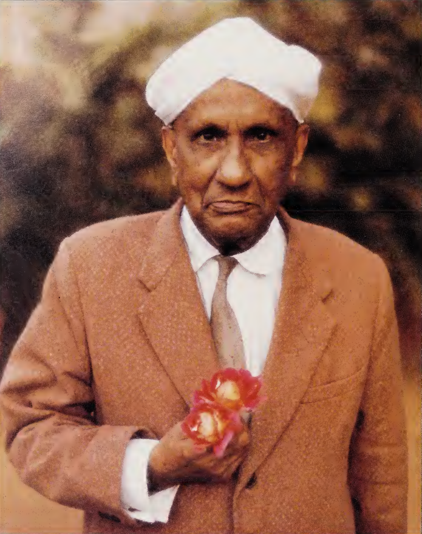
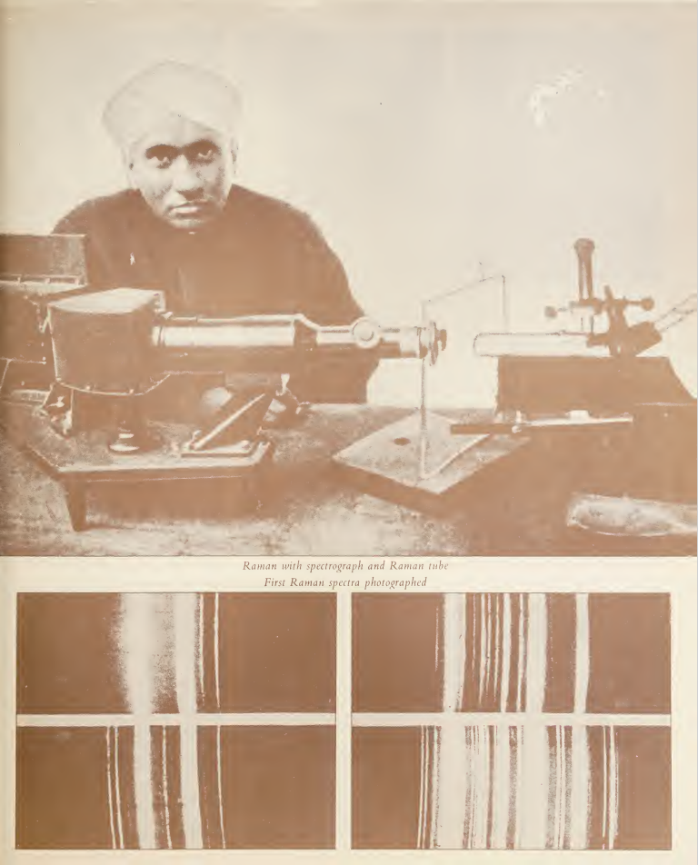
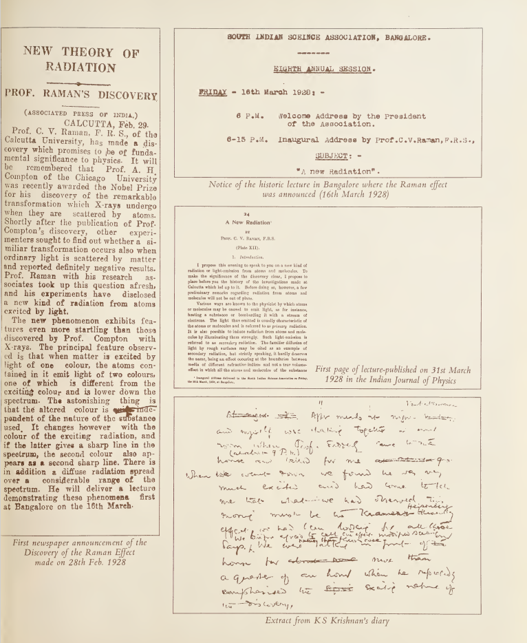
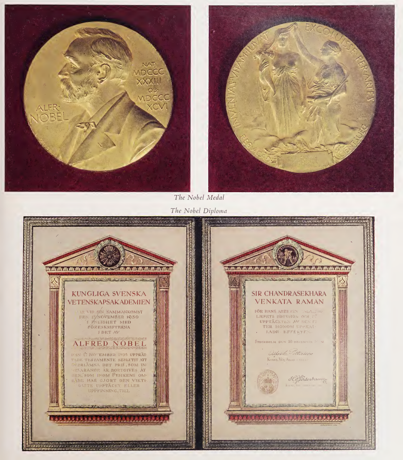
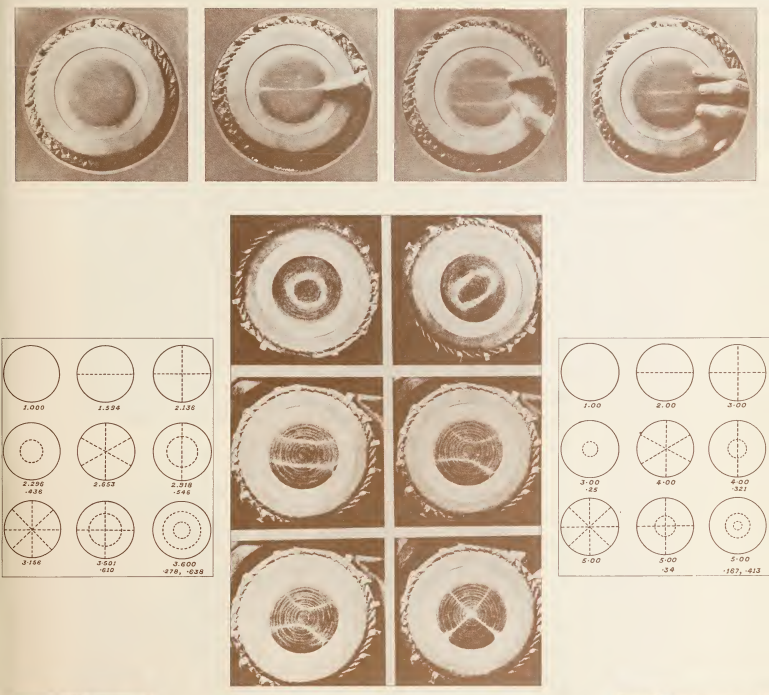
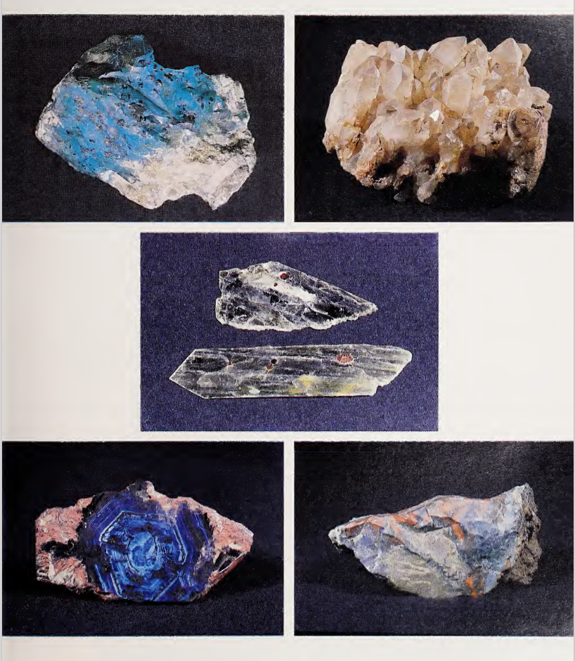
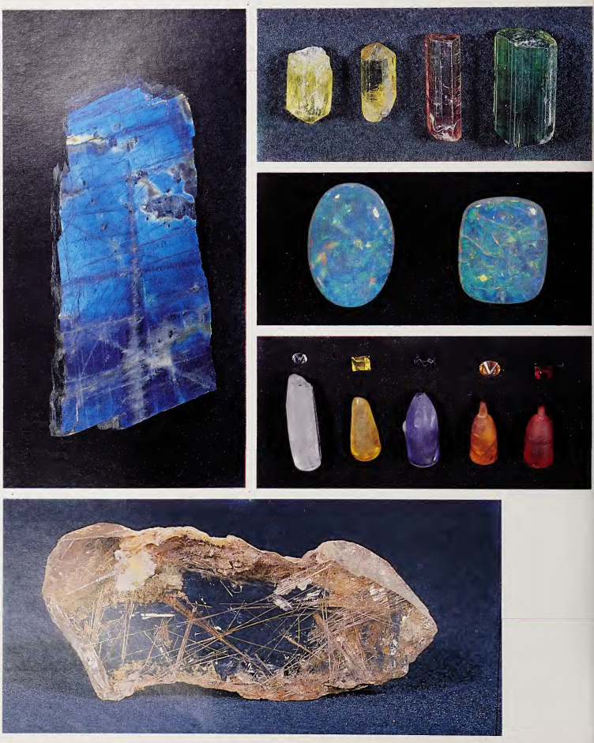
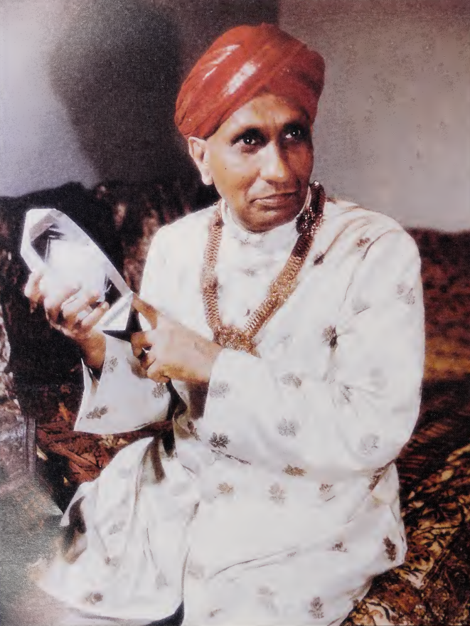

We Indians celebrate National Science Day on 28th February each year to mark the discovery of the Raman effect by Sir C. V. Raman. Some of Raman’s discoveries like the Raman effect (for which he was awarded the Nobel prize), Raman-Nath theory, his studies on Brillouin scattering, the soft mode process, etc. are so well known and outstanding, that they tend to overshadow many of his other elegant and significant contributions to the science. We attempt to highlight a few of Raman’s discoveries such that they portray a more complete picture of Sir C. V. Raman and his contributions.

Sir Chandrasekhara Venkata Raman
(7 November 1888 - 21 November 1970)
Sir C. V. Raman occupies a very special place in the scientific landscape of India. His contributions to science were monumental both in scale and scope. He also played a pivotal role in shaping Indian science institutions and redefined the way in which science was done in India. Max Born, a nobel prize winning german scientist who was instrumental in the development of the quantum mechanics, had this to say about Raman,
“There is no Indian physicist of the rank of Raman. No man can compare with him in vigor or intensity.”
The curious case of a relentless experimentalist
It was the year 1921. You could find a turbaned Indian man on a ship returning from Europe to India, running all around, with his nicol prisms and cardboard tubes, collecting sea water from the depths of the ocean. The visual beauty of the Mediterranean ocean had bewitched him. Not so long ago, Lord Rayleigh had shown that the blue color of the sky is due to scattering of light by air molecules. However, according to Lord Rayleigh, the blue color of the deep ocean was due to reflection of the sky in the water. Raman showed, by a simple experiment he performed on board the ship, that the blue color of the ocean is due to molecular scattering and not just due to the reflection of the sky. He quenched the sky’s reflection with a nicol prism at the Brewster angle and found that the blue color “far from being impoverished by suppression of the sky reflection was wonderfully improved thereby”. In 1922, he wrote the celebrated monograph “Molecular Diffraction of Light” and so began the saga of a single-minded man pursuing his vision with a stamina and persistence never seen before, which eventually lead to the discovery of the Raman effect and many other outstanding contributions.
Weak Fluorescence
In April 1923, KR Ramanathan, one of Raman’s students, studied the scattering of light in water. Sunlight was focussed on the liquid and the scattered light was observed through a system of complementary filters, each filter completely cutting off the light transmitted by the other. Nothing should have been observed if there had been no change of color during the scattering process. However, a track of scattered light could be observed showing there was indeed a change in the color of light during scattering. This was attributed to a “weak fluorescence” due to impurities which were believed to be present. Raman was not convinced with this explanation though. This “weak fluorescence” was not completely depolarised (as true fluorescence should have been) and the amount of depolarisation changed with wavelength.
THE RAMAN EFFECT

Sir C. V. Raman with the spectrograph (Top) and the first Raman spectra photographed (Bottom)

Newspaper announcements of the discovery of the Raman effect
In December 1927, the so-called polarised “weak fluorescence” was observed again by S Venkateswaran in pure glycerine with greater intensity. Due to limited availability of S Venkateswaran, Raman persuaded KS Krishnan, one of his brightest students, to set up experiments to find “weak fluorescence” in various materials. Raman and Krishnan worked together continuously and detected the polarized “weak fluorescence” in all the liquids, gasses and solids they examined. According to Krishan, Raman personally verified all the liquids exhibited this phenomenon. Raman was so excited about the discovery that he rushed to Krishan’s home at night to inform him that their observations were related to the Kramers-Heisenberg process they were looking for all these years. A note was sent to the Nature journal about the discovery. However, Raman continued his experiments, mostly by himself since the observed phenomenon was not yet fully understood. On February 28th 1928, Raman examined the scattered light with a direct vision spectroscope and found that the classical and modified scattering appear in the spectrum as separate regions with a distinct dark region between them, a clear demonstration of a change of wavelength in scattering. The Nobel Prize in Physics 1930 was awarded to Raman “for his work on the scattering of light and for the discovery of the effect named after him.”

Raman’s Nobel medal and citation
Indian musical instruments and acoustics
Even before Raman started working on the scattering of Light, he was fascinated by waves… sound waves! Raman’s father, R Chandrasekhara Iyer was a teacher of Physics and Mathematics and a proficient violinist. That must have influenced him to take interest in the physics of sound waves. Raman himself played violin. At the age of 16, when he was a student of the Presidency college, Madras, Raman commenced his acoustic research.

Illustration of a Veena
He investigated whether his intuition that the veena produces the most exquisite musical sound is due to sentiment or has a sound physical basis. The bridge of the veena is so cunningly constructed that the Helmholtz law, which states that the position at which the string is plucked cannot be a node, is violated. Thus this instrument produces innumerable harmonics making its sound closest in harmonic content to the human voice.

The mridangam and tabla produce a succession of musically harmonic overtones in the same way as any stringed instrument
A sharp ear with a keen interest in music can detect musical overtones in the sound of the mridangam and the tabla. Raman discovered that the heterogeneous loading of their membranes can produce harmonics - so that in the hands of the masters, the Indian drum is similar to a stringed instrument.
Diffraction of light by ultrasonic waves - Raman-Nath Theory
Light is a form of electromagnetic radiation. Young’s double slit experiment conclusively showed that the interference pattern can be obtained from interaction of light with matter. How about the interaction of light with matter waves! Raman-Nath theory explained a remarkable optical phenomenon that occurs when a parallel beam of light is diffracted by ultrasonic waves. In modern electro-optic instrumentation, the phenomenon of diffraction of light by ultrasonic waves is utilized in acousto-optic spectrometers, which analyze the electrical signal to obtain its power spectrum.
Colors in Nature
Raman always had a huge fascination for colors. In the institute that he had built for himself after retirement (now Raman Research Institute), he started building his collection of colorful minerals gathered from all across the world. The collection includes limestones, marbles, alabaster, gypsums, tourmalines, agates, quartzites, jades, amethysts, fluorites, micas, serpentines, iolites, malachites, lapis lazuli and feldspars. Raman studied several of the exquisite optical phenomena displayed by these minerals. Due to lack of basic facilities during the initial days of his new institute, he had to mostly rely on the beam of sunlight to explore the optics of these substances. Even with such simple setups, it is remarkable that he could extract a substantial amount of information about these minerals.


Raman’s collection of minerals
Birds are a delight to watch! Raman was very curious about the optical characteristic and the color distribution in birds, since it was so different in different parts of the same bird, in different specimens and in different species that no single explanation would suffice. He would invoke every known optics concept to try to explain these phenomena. He published only one paper on this topic; however talked about it a lot. The interest was not just limited to birds though. “Birds, Beetles and Butterflies” was his favorite title for the talk. He gave dozens of lectures on this subject, each one unique!
Diamond
Soon after the discovery of the Raman effect, C Ramaswamy, Raman’s younger brother, asked him to suggest a research problem which he could pursue. Seeing the diamond ring of the newly wed Ramaswamy sported on his finger, Raman suggested the study of scattering in diamond. The famous 1332 cm-1 Raman line of diamond was discovered in the spectrum. Using a 140-carat diamond that was borrowed from the Maharaja of Darbhanga, Bhagavantam, one of Raman’s pupils confirmed this result and also recorded the complex luminescence spectrum around 4152 Å.
Raman says this about diamonds,
“With their perfect geometric forms and their smooth lustrous beauty they look absolutely fresh from nature’s crucible, although actually taken from sedimentary formations a thousand million years old. The strongly marked curvature of the crystal faces and the smoothly rounded edges are a surprising feature of these crystals”

Sir C. V. Raman with beloved diamond
In continuation with his work on diamonds, he also carried out pioneering studies of the thermo-optic behavior of other solids, their photo-elastic and magneto-optic properties, fluorescence, second order Raman effect, infrared spectroscopy, etc. It is perhaps not well known that X-ray topography was discovered in this laboratory while studying the imperfections in diamond.
He also worked on lattice dynamics, visual perception and many more topics and made contributions in those areas. It is almost impossible to give a complete description of his diverse research interests and achievements in a single article. More elaborate descriptions about the scientific works of Raman can be found in “C.V. Raman : A pictorial biography” a compilation by S Ramaseshan and C Ramachandra Rao.
Pioneer of scientific research in India
Throughout his career, Raman played an integral role in the development of the Institutes that he was part of. During the early 1900s, most of the Indian universities were teaching universities. There was a general belief that new science can not grow in the country and all the young bright minds were sent abroad for ‘training’. Raman, setting his own example, cultivated the culture of scientific research in India. He made an active effort to bring the best minds in the world, like Max Born, Schrodinger, Ewald, Peierls, Kuhn and many more to India. He thought, bringing such great minds could start a scientific movement in the country. Unfortunately, only Max Born could accept his invitation. Raman founded the Indian Academy of sciences in 1934 with the main objective of promoting progress and upholding the cause of science. Central to this mission was to publish scientific monographs and journals through which research discoveries could be disseminated worldwide. The proceedings of the Indian Academy of sciences was considered as one of the top journals up until the 1950s. The annual meetings of the academy, so called ‘traveling circus’, were the main source of science encouragement in the country, with Raman usually being the star performer.
Today, the academy publishes twelve journals in different areas of science and science education, in addition to more than fifty books that have been published over the years.
Note: All the images in the article are taken from “C.V. Raman : A pictorial biography” a compilation by S Ramaseshan and C Ramachandra Rao.
Acknowledgments:
We thank Saurabh Singh (Scientist, RRI Bangalore) for his timely inputs, K. Manjunath (Library, RRI Bangalore) and V. S. Naresh (Administration, RRI Bangalore) for allowing access to the RRI archives, without which this article would not have been possible. We also thank the RRI trust for their support.
References:
- “C.V. Raman : A pictorial biography” - A compilation by S Ramaseshan and C Ramachandra Rao, published by Indian Academy of Sciences.
- “Molecular Diffraction of Light” - Published in the Nature journal in 1922
- “The acoustical knowledge of the ancient Hindus” - Published in Asutosh Mookerjee Silver Jubilee Volume in 1922
Related articles
- Mendeley Reference Manager
- Using GitHub for Academic Research
- The scientific legacy of Thanu Padmanabhan
- What is CosmicVarta?